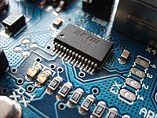
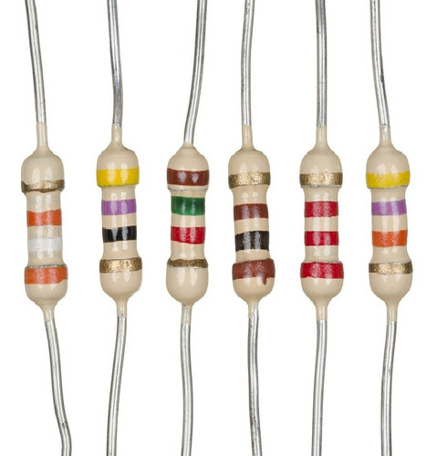
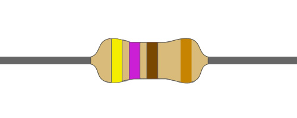
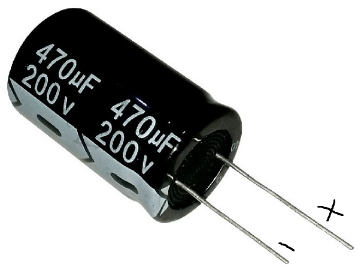
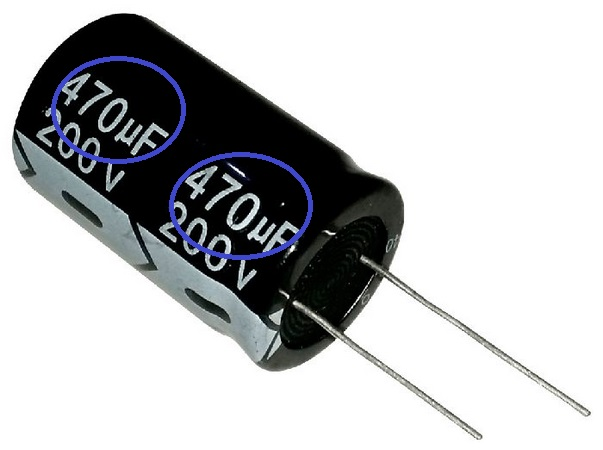
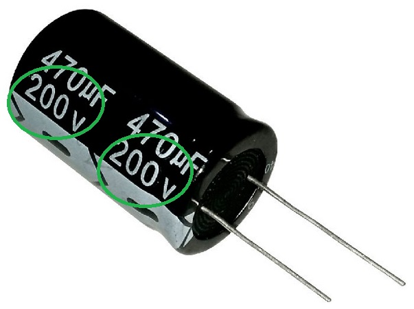

Eletrônica
Nesse topico iremos aprender sobre eletronica.
Para inicar nossa discurção precisamos entender o que é a eletrônica.
Eletrônica: É a ciência que estuda a formação e utilização de correntes elétricas, por meio de componentes eletrônicos.

Para a montagem de um circuito é utilizado diveros componentes eletrônicos, a seguir veremos alguns deles suas funções.
Resistor: O Resistor é um dos componentes mais fáceis de ser achado em aparelhos eletrônicos, sua principal função é transformar energia elétrica em térmica, reduzindo assim a corrente evitando a queima de componentes do circuito.

Como podemos ver os resistores possuem colorações em seus corpos, essas cores determinam a resistencia do resistor a qual é simbolizada em ohms(Ω). A seguir veremos a tabela de cores utilizada para ler as cores do resistor.

A leitura é feita da seguinte forma, a primeira cor repretenda o primeiro e segundo número, a terceira o número de zeros e a quarta a tolerancia.
Por exemplo:

Como vimos na explicação acima as primeiras 2 cores representão os dois primeiros números, que no exemplo são 4(amarelo) and 7(violeta), a terceira informa o número de zeros, no exemplo são 1(marrom) e a ultima cor informa a tolerancia, 5% no exemplo. Sendo assim o resistor da imagem é de 470Ω ohms
Capacitor: Componente utilizado para armazenar enérgia.

Como dito anteriormente sua função é armazenar enérgia. A perna maior representa o polo positivo e a menor o negativo, em seu corpo podemos ver algumas informações como:

Quantidade de carga capaz de armazenar.

Tensão maxima suportada